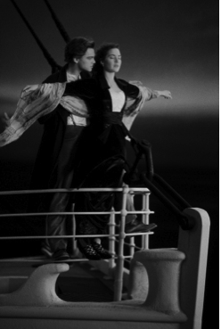

Kuşkusuz, Şey’e dair en iyi örnek, The Thing’den tutun da nispeten güncel bir film olan Similla’s Sense of Snow’a dek çeşitli filmlerde tezahür eden, bir başka evrenden gelen gizemli hortlak, alien, insanlık dışı fakat bir o kadar hayat dolu ve çoğu zaman kötü emelleri olan nesnedir. Burada Lacan’ın The Ethics of Psychoanalysis seminerinde das Ding’e dair verdiği örneklerden birini unutmamak gerekir: Marx kardeşlerden dilsiz Harpo Marx’ın espritüel bir deha mı yoksa tam bir aptal mı olduğunu asla anlayamayız ve bu nedenle o bir canavara benzetilir. Çocuksu masumiyet, iyilik ve aşırı ahlaksızlık ve cinsel sapkınlığı kişiliğinde bütünleştiren bu karakterin nasıl birisi olduğunu bir türlü anlayamayız. Cennetten kovulmadan önceki ilahi masumiyeti mi yoksa iyi ile kötü arasında fark tanımaz saf egoizmi mi temsil etmektedir?2 Bu mutlak belirsizlik -ya da kıyas kabul etmezlik- onu canavari Şey, tamamen insanlık dışı bir partner, Şey sıfatı taşıyan bir Öteki haline getirir. (Başkaları tarafından da belirtildiği gibi bu üç erkek kardeş, ego [Chico], süperego [Groucho], ve id [Harpo] Freudcu üçlemesi adına mükemmel örneklerdir. İşte bu nedenle dördüncünün yani Zeppo’nun dışarda kalması gerekir; üçlemede ona yer yoktur.) Bu Şey, King Kong’dan Moby-Dick’e, J. Lee Thompson’un The White Buffalo’sundaki koca beyaz bufaloya kadar korkunç bir hayvan da olabilir. Thompson’un bu tuhaf ama son derece özgün filminde ihtiyar Wild Bill Hickok, rüyalarına giren beyaz bir bufalodan (aynı zamanda Amerikalı Yerlilerin kutsal hayvanı) rahatsız olup Vahşi Batı’ya döner; filmin tamamı, dar bir dağ geçidinde bufalonun saldıracağı ve kahramanımız tarafından öldürüleceği son karşılaşma ânının hazırlanması ve sahnelenmesinden ibarettir. Bronson’ın körelmiş bir bakışın ve iktidarsızlığın, yani kastrasyonun kodlanmış alameti olan karanlık gözlükler takması kayda değerdir (iktidarsızlığı filmde zaten açıkça bildirilmiştir: Eski aşkı Poker Jenny’le buluştuğunda sevgilisinin beklentisini yerine getirememiş, onunla cinsel ilişkiye girememiştir).3 Burada alışıldık bir Freudcu yorum kolaylıkla yapılabilir: Beyaz bufalo, henüz ölmemiştir ve bu yüzden kahramanın cinsel iktidarını bloke eden primordial babadır - onun dehşetli sesi Yahudi dinindeki şofara benzer; dolayısıyla kahramanın derdi baba katline ilişkindir. Fakat daha önemlisi, bu Şey’in (beyaz bufalo) sadece cinsel iktidarsızlık değil aynı zamanda Amerikan kapitalizminin yıkıcı doğasıyla da ilişkilendirilmesi-dir: Hickok son tren istasyonuna vardığında, ölü bufaloların beyaz kemiklerinden oluşan dağı görür (bildiğimiz gibi bu katliamların çoğundan bizzat kendisi sorumludur). Kuşkusuz, beyaz bufalo tüm ölü bufaloların aldığı bir çeşit intikamın hayaletiydi. (Hickok aynı zamanda Kızılderililerin katili olarak da temsil edilir; filmde aynı bufalonun peşine düşen bir Kızılderili savaşçıyla arkadaşlık etmesi, Amerika’nın Batılılarca sömürgeleştirilmesi çerçevesinde kendi kanlı geçmişiyle hesaplaşmasını simgeler.)
Charles Branson, White Buffalo
Tabii konunun psikanalitik perspektifimizle ilişkisi, bu Şey’in -şimdiye değin tam da aseksüel olan- doğasındaki cinsel farklılıkla ilgilidir: Peter Weir’in Picnic at Hanging Rock (Hanging Rock’da Piknik) filminde Melborn’un kuzeyindeki dev volkanik kaya, böyle bir Şey’in bir başka versiyonu değil midir? Daha kesin bir ifadeyle, bir kez içeri girdiğimizde cinsel hazzın müstehcen gizlerinin erişime açıldığı, sıradan geleneklerin askıya alındığı bir yasak bölge (mıntıka) değil midir? Picnic, Melborn’un kuzeyinde üst sınıf ailelerin kız çocuklarının gittiği Appleyard Kız Koleji’nde 1900 senesinin sevgililer gününde gerçekleşen tuhaf olayları konu eder. Kızlar, lav kalıntılarından meydana getirilmiş bir doğal anıt olan Hanging Rock’a pikniğe gitmişlerdir. (Böylece filmin ilk gizemli unsuru gündeme gelir: Yaygın bir söylentiye göre film gerçekten yaşanmış bir kaybolma öyküsüne dayansa da, bu iddianın belirli bir temeli yoktur. O halde belirli bir temeli olmayan bu inanç on yıllardır niçin ayakta? Masum görünen sarışın Miranda yola koyulmadan önce arkadaşı yetim Sarah’ya artık okulda kalamayacağını söyler. Piknik esnasında kızlardan dördü -Miranda, zengin mirasyedi Irma, akıllı Marion, ve çirkin Edith- kayaları gezmeye karar verir. Bitkin halde olan Edith diğer maceracı kızlarla birlikte bundan daha ileriye gitmek istemez; bir şeylerden korkar ve çığlık çığlığa piknik alanına geri koşmaya başlar. Öteki üç kız ve öğretmen Bayan McCraw, Anıt Kaya’nın içerisinde kaybolurlar. Onları Kaya’ya yaklaşırken gören iki genç erkek yardım için peşlerinden gider. Zengin Michael delirme belirtileri gösterir ve kayada kendini yaralar ama yine de Irma’yı bulur. Irma hâlâ hayatta olsa da başına gelen hiçbir şeyi hatırlamaz. Bu arada alkolik müdüre hanım Bayan Appleyard, Sarah’nın vasisinden para gelmediği için Sarah’yı okula almamaya karar verir. Ona yeniden yetimhaneye döneceğini söyler ve binanın çatısından aşağı iter (yoksa Sarah intihar mı etmiştir?) Birkaç gün sonra Bayan Appleyard’ın kendisi de Hanging Rock’a tırmanmaya çalışırken ölür. Hanging Rock’un esrarını bunca ilginç kılan şey öykünün gündeme getirdiği yorumların hayli fazla olmasıdır. Mevcut gizemin “tam anlamıyla” çözümü bakımından beş olasılık var:
-Alelade, doğal bir açıklama: Üç kız ve öğretmen, Kaya’nın karmaşık taş yapısındaki derin yarıklardan birine düştü, ya da orada sürüyle bulunan yılan ve örümceklerin kurbanı oldu;
-Cinayet-seks merkezli açıklama: Ya Kaya’da pusuya yatmış bekleyen kötü Avustralyalı yerlilerce ya da kızları çekici bulan ve sonra birisini azat eden iki genç karakter, Michael ve Albert tarafından kaçırılıp tecavüz edildiler ve oracıkta öldürüldüler;
-Cinsel-patolojik açıklama: Bastırdıkları erotizmden ötürü kızlar kendilerini yok eden şiddetli bir isterik patlama yaşadılar;
-İlkel-dini doğaüstü açıklama: Dağın ruhu bu davetsiz misafirlerin arasından kendi aklına yatanları kaçırdı (ve haliyle şehvetli gizemlere uygun olmayan dördüncü şişman kızı reddetti);
-Alien merkezli açıklama: Kızlar farklı bir zaman ve uzama girdiler. (Filmin esinlendiği romanın yazarı Joan Lindsay bu son açıklamaların bir terkibine bel bağlar; kitabın on sekizinci bölümünü “Hanging Rock’un Gizemi” olarak adlandırır ama bu bölüm ancak 1987’de o öldükten sonra basılır.)
Bütün bunların dışında en azından iki “metaforik” açıklama var: Öykü, düzenli ama eski bir binada konuşlanmış, katı disipliniyle Viktorya dönemini yansıtan bir yatılı okulla, Kaya’nın vahşi tümseğinde devam eden doğal, serbest bir hayat arasındaki karşıtlığa dayanır. Okulun sert atmosferi, sert yüzeylerin biraz altındaki erotizmi çağrıştırır (öğrencilerin diğer öğrencilere ve öğretmenlere duyduğu; buna karşılık öğretmenlerin de öğrencilere hissettiği yarı bastırılmış lezbiyen arzu). Viktorya döneminin bastırılmış arzularla dolu o ünlü katılığına karşı her türlü ayrıntısıyla ve korkutucu görünümüyle Kaya dizginsizce gelişen bir hayata tekabül eder (Weir, uyuyan kızların etrafında gezinen kertenkelelerin ve yılanların ilk günahla benzeşen yakın çekimlerini sunar bize, bunların yanı sıra vahşi ve aşırı yeşillikten, kuş sürülerinden bahsetmemize gerek var mı?)4 Dolayısıyla bu kaybolma öyküsünü, Viktorya dönemindeki bastırılmış arzuların açığa çıkmasının farklı bir biçimi olarak okuyan bir zamanların moda yorumuna bel bağlamaktan daha kolay ne olabilir ki? Frijit matematik öğretmeni Bayan McCraw, Kaya’nın ortaya çıkış sürecini “epey yapışkan ... ve aşağıdan yukarı fışkıran” erimiş lavlar olarak tarif eder. Doğal bir fenomen olmaktan, dünyanın derinlerinden gelen volkanik bir atık olmaktan öte, bastırılmış ergenlik döneminde kız çocuklarında yavaş yavaş uyanan hormonların tarifine benzemektedir bu tarif. Uzun süredir toplumsal törelerce denetlenen dizginsiz yaşam tutkusuna işaret eden Kaya en sonunda patlıyordur. Buna sömürgecilik karşıtı bir anlam da yüklenebilir: Kaya’da gerçekleşen kötücül kaçırma eylemi İngiliz sömürgeciliğine karşı bir direniştir adeta (Kaya’nın intikamının bu şekilde cinselleştirilmesi, kuşkusuz, fantazmatik bir içeriğe, yani Öteki’ye ait olmaktansa sömürgecilerin Öteki’ye yansıttıkları içeriğe ilişkindir). Bu okumada Kaya esasen “tutkulu bağları,” bu bağların aldığı intikamı ve okulun disipline edilmiş rutininin yıkılmasını simgeler: Filmin sonunda otoriter baş öğretmen Bayan Appleyard bile kontrolü kaybeder, dağdaki yüksek bir kayadan atlayarak ölür.
Film, esas muammayı çözmese bile farklı yönlerine işaret eden birçok ipucu sunar (kızlar kaybolduğunda beliren garip kırmızı bulut, dağın ruhunun kaçırma öyküsüne aracılık ettiğini gösterir gibidir; piknik günü bütün saatlerin on ikide durması, kurtulanların hepsinin amnezisi ve alınlarındaki benzer yaralar alien tarafından kaçırıldıkları ve farklı bir “zaman mıntıkası”na konumlandıklarına dair standart göstergelerdir). Fakat, alın yazısı kör talihin baskın atmosferi (olanlar zaten bir şekilde olacaktı, bir dizi kazadan ibaret değildi, grubu dağa götüren melekvari kız Miranda adeta bu kaderin bir önsezisine sahipti) fallik ve heteroseksüel olmayan bir erotizmle özdeşlenir: Kaya’nın erotikleştirilmesi ve onun ölümcül cazibesinin açıklığına rağmen (sağ kalan tek kız Irma, bulunduğunda düzgün giyimlidir, ama ne ilginçtir ki, soyunup yatağa girdiğinde baskıcı Victorya dönemin bir sembolü olan korse giymediğini görürüz; Kaya’da kaybolan frijit matematik öğretmeni Bayan McCraw, Kaya’ya doğru körlemesine yürürken adeta çevresi tarafından ele geçirilmiş gibidir, eteği yoktur, yalnızca iç çamaşırları vardır), bu öyküde kızlara tecavüz edilmediği vurgulanır (hayatta kalan Irma’yı muayene eden doktor, kızlık zarının “el değmemiş” olduğu güvencesini verir). Standart fallik cinsel deneyimden öte, Kaya, libidonun, dizginsiz gelişen hayatın ilksel deneyimine, belki de Lacan’ın jouissance feminine olarak düşündüğü şeye tekabül eder. (Yine devasa bir kayalık civarındaki mağarada cereyan eden, çözümsüz kalmış bir cinsel muamma öyküsü olarak A Passage to India (Hindistan’a Bir Geçit) ile bu öykü arasındaki fark burada düğümlenmektedir: A Passage to India sömürgeci çıkmazları karmaşık anlatırken aksine cinsel hayal kırıklığına uğramış kadın kahramanın standart heteroseksüel deneyime yönelik arzusunu açıkça ele alır.)
Filmdeki tek seks sahnesinin okulun en az nazik ve dolayısıyla arzularını en az bastıran, Kaya’nın cazibesiyle uzaktan yakından alakası olmayan hizmetçileri Tom ve Minnie arasında gerçekleşmesi önemlidir. Bunun dolaysız bir izahı Kaya’nın uyandırdığı aşırı, ölümcül derecede boğucu duyguların sadece Viktorya dönemindeki baskının cazibesi altında yaşayanlara tesir etmesi olabilir. Fakat bu kavrayışı (bastırma, sağlıklı cinsel tatmini önler ve böylece bulanık, tinsel bakımdan çökmekte olan, sapkın ve global bir cinsellik üretir) tersine çevirip “straight” heteroseksüelliğin, hemcinse yönelik ilksel bazı “tutkulu bağlılıkların” bastırılmasına dayandığını ve dolayısıyla Viktorya döneminde heteroseksüelliği bastırma pratiğinin, çok daha radikal bir biçimde bastırılmış tutumların geri dönüşünü mümkün kıldığı ve bu tutumlar aracılığıyla sürdürüldüğünü öne sürecek olursak? Freud heteroseksüel arzuları bastırmanın, bundan çok daha ilksel olan fallik dönem öncesi dürtülerin yeniden aktive edilmesinden enerji aldığı sürece devam edebileceğini vurgular. Paradoksal olarak, kültür adına bastırma pratiği ise ister istemez libidinal bir geri çekilişe dayanması gerekir. Libidinal yansımanın en saf hali şöyledir: (Fallik) cinselliğin bastırılmasının ta kendisi, cinselleşmiştir ve fallik dönem öncesi sapkınlık biçimlerini harekete geçirir. Bu noktada, Now, Voyager’de (Aşk Yolcuları) Bete Davis’in sevgilisine daha çok cinsel ilişkiye girmelerinin neden bir zaruret olduğunu açıkladığı son satırlar hakkında Elizabeth Cowie’nin yaptığı yorum akla geliyor: “Yıldızlara sahip olmak varken neden aya gidelim ki?” Heteroseksüel cinsel ilişkiyi reddettiğimde lezbiyen “primordiyal bağların” yoğun hazzından yararlanabilecekken neden heteroseksüel cinsel ilişkiyi tercih edeyim ki?
İşte bu yüzden, üç kıza sadece öğretmenlerin en soğuk olanı, (heteroseksüel standartlara göre) bir frijitlik örneği olan zavallı Bayan McCraw eşlik eder ve on sekizinci bölümde gizemli, tuhaf bir cinselliği simgeleyen “Palyaço Kadın” olarak tekrar ortaya çıkar. Bu mantık akışını sonuna kadar takip edersek okul müdüresi kişiliğini de tekrar yorumlamamız gerekmez mi? Ya Bayan Appleyard, Kaya’nın karşıtı olmak şöyle dursun ta kendisi ise? Ya Kaya’nın yamaçlarında intihar etmesi, Kaya’nın ilkel tutkularına boyun eğmesini değil de bu tutkuların nihai kimliğini gösteriyorsa? Tüm bunlar Titanik için de geçerli değil midir? Titanik, okyanusun derinliklerinde gizemli bir nesne olarak sadece Şey’in mükemmel örneği değildir, insanlar yakınına gelip fotoğraflarını çektiğinde bu kalıntının bozulan huzuru, yasak bir bölgenin ihlalini de simgeler. Belki de James Cameron’un Titanik’inin başarısının anahtarı Şey’i alttan alta cinsel ilişkinin çıkmazlarıyla bağlantılandırmasıdır. Bir facianın peydahlanması (deprem, su baskını, vs.) sayesinde insanların kendi aralarındaki düzeysiz çatışmaları aşarak yeni bir global toplumsal dayanışma içine girdiği yönündeki standart öykünün aksine Titanik’deki facia, üst ve alt sınıflar arasındaki gizli toplumsal gerilimi açığa çıkarır ve facianın ardından bu gerilim patlar. Fakat yine, bu toplumsal gerilimin bir çift yaratma konusuyla çerçevelendiğini görürüz. Kaza ânı oldukça önemlidir: Çarpışma adeta ihlalci eyleme (cinsel ya da toplumsal) bir ceza olarak tam da cinsel eylemin peşisıra meydana gelir. Daha kesin söylemek gerekirse, çarpışma Rose’un New York’taki eski hayatını terk edeceğini ve Jack’le birlikte olacağını söylediğinde meydana gelir. Tabii ki bu söylenen, gerçekten bir facia ve büyük bir hayal kırıklığı olabilirdi. Rose gerçekten Jack’le ilelebet mutlu, doğru düzgün bir evi ve serveti olmayan bir derbeder gibi yaşayabilir miydi? Dolayısıyla buzdağı sanki çok daha büyük bir faciayı önlemek, iki sevgilinin mutlu olmaları fakat sonra birlikteliklerinin çöktüğünü görüp hayal kırıklığına uğramalarını önlemek için gemiye çarpmıştı. İşte bu, Hollywood’un en çıplak halidir: Facia (buzdağının gemiye çarpması) bir çift yaratmanın çıkmazına Gerçek’in cevabı olarak tekrar anlam kazanmıştır. Filmin anlamının işaret ettiği nihai yorumbilgisel çerçeve, bir heteroseksüel aşkın yaratılmasıdır.
Lacancı bir perspektiften bakıldığında burada ikili bir ideolojik aldatma söz konusudur. İlk olarak buzdağının gerçek libidinal faciayı (örneğin çiftin Amerika’daki birlikteliğinin büyük olasılıkla çarçabuk sona ereceği, sınıfsal bariyerlerin ihlalinin neticede başarısız olacağı gerçeği) önlemek için çarpması bir faciadır: Buzdağının gemiye çarpmaması durumunda çiftin sonsuza dek mutlu yaşayabileceği illüzyonunu sürdürmemize bu facia yardım eder. Fakat daha derin düzeyde çiftin ilişkisinin başarısızlığının suçunun sınıfsal farklılıklar olduğu düşüncesi bu ilişkinin a priori yapısal sebeplerden (“cinsel ilişki yoktur”) dolayı başarısızlığa mahkûm olduğu gerçeğinin üstünü örter. Suçu sınıfsal farklılıklara yüklemek cinsel ilişkinin doğasındaki imkânsızlığın bilgisinden kaçınmamıza yarayan bir yem, bir tuzaktır; yani sınıfsız bir toplumda en sonunda kamilen bir cinsel ilişkiye girilebileceği fantazisini sürdürmemize yarayan bir tuzak.
Titanik’in az bulunan incelikli anlarından biri tam olarak bu arka planda açıklanabilir: Jack buzlu sularda donarak ölmüştür, yüzen bir tahta üzerinde emniyette olan Rose ise çaresizce onun ellerine sarılır. Bir cesedi tuttuğunun farkına vardığında şöyle haykırır: “Hiçbir şey ayıramaz bizi! Gitmene asla izin vermeyeceğim!” Fakat bu rezalet sözlere eşlik eden sahne, Jack’in gitmesine izin verilmesi, karanlık sular tarafından yutulmak üzere nazikçe itilmesidir.
Haliyle, Jack tam bir sevgili olmaktan öte Rose için bir çeşit kaybolmuş aracıdır: Egosu parçalandığında ayna imgesini Jack restore eder (ideal imgeyi bizzat cisimlendirerek); Rose’a en son talimatları verdikten (“Bir sürü çocuğun ve uzun bir ömrün olacak”) ve kendini onun için feda ettikten sonra zerafetle okyanusun derin sularında kaybolup resimden silinir. Dolayısıyla, Titanik bir çift yaratmanın yanı sıra bir kadının tam olarak kendi narsisist imgesini oluşturmasına ilişkin bir filmdir. Rose kurtulduktan sonra görevliye kendini Jack’in soyadıyla yani “Rose Dawson” olarak tanıtır. Fakat buradaki problem kurtuluşun bir erkeğin ismini almakla tezahür etmesi değil, bu kurtuluşun gerçekleşebilmesi için erkeğin ölmek zorunda olmasıdır. Haliyle, Cameron’un Hollywood Marksizminin de sınırları vardır: Jack’in kurtarıcı unvanıyla davet edildiği yemeğe katılmak için ilerlediği lüks merdivende, bu kez sınıfsız bir rüyada, (nitekim kaptandan üçüncü-sınıf göçmene kadar her sınıftan yolcu, çiftin kavuşmasını seyreder ve onları alkışlarken Jack normal işçi-sınıfı giysileri içindedir) Rose’a yaklaştığı filmin son sahnesinin sade güzelliği ve sinematik etkisine hayranlık duymak için sabırsızlansak da bu sefer de Rose’un gemi felaketinden sonra üst-sınıf hayatına devam ettiğini öğreniriz - Rose’u sınıfsal önyargılarının boğucu kısıtlamalarından kurtarma misyonunu tamamladıktan sonra Jack sırra kadem basan bir aracı olarak bir kenara itilecektir. Filmin sonunda, ihtiyar Rose denize büyük bir elmas atar: Tüm film boyunca problem değerli bir nesnenin kaybının, bir olgunlaşma bedeli olarak kabul edilmesidir. Sonuçta bu nesne Jack’tir, onun derinliklerde yok olması elmasın kaybolmasına benzer. Aynı şey, gemi batmaya başladığı zaman çiftin özel bir yerden (geminin en uç noktasından), Rose’un ilk seferde atlamak istediği ama Jack’in ona yaklaşıp atlamaktan vazgeçmesi için kendisinin de onunla birlikte atlaya-cakmış gibi göründüğü yerden atlaması için de geçerlidir: Rose’un ilk atlama teşebbüsü toy, şımarık ve ha-yalkırıklığına uğramış bir çocuğa ilişkin sayılabilecekken, Jack’in de dahil olduğu ikinci atlama olgun bir insanın hayatı kucaklamasına ilişkindir.5

Cameron’un ihmal edilmiş şaheseri Abyss (1989) adeta terse çevrilmiş Titanik’tir. Abyss ve Titanik’in (başlangıcının) genel kurguları arasındaki benzerlik çok ilginç: Abyss’te okyanus yüzeyindeki bir grup araştırmacı, derinlere dalıp zemindeki Şey’le temasa geçme çabasındadır. Titanik’te, Şey -gemi- batarak okyanusta kaybolurken Abyss’in sonunda okyanusun dibindeki şey -alien uzay gemisi- zafer nidasıyla okyanus yüzeyinde (yeniden) görünür. Her iki durumda da bu (yok)oluş bir çift yaratmakla ilişkilenir: Titanik’te âşık çiftin birlikte yaşama kararının vaat ettiği bir mutlu son hayalinin devamı için Şey batar; Ed Harris ve Mary Elizabeth Mastrantonio’nun bir bilimadamı ve dalgıçın başarısız evliliklerini oynadığı Abyss’de ise Şey, çifti aşklarını yeniden keşfetmek zorunda bırakmak için kendini ortaya çıkarır. Abyss’in farklılığı birbiriyle ilintili iki özellikte yatar: Okyanusun dibindeki Alien Şey, en temelde yıkıcı değil şefkatlidir ve onun ortaya çıkışı Hollywood’un bir çift yaratma matrisine kazınmıştır.
Abyss (1989)
Fakat, bilimkadını ile dalgıç koca arasındaki sihirli iletişim sahnesiyle açığa çıkan Abyss’in doruk noktası, filmin standart formülünden çok daha etkileyicidir. Eski koca, kafasını tıpkı doğum öncesinde olduğu gibi havasız bir yerde, suyun içinde doğrudan nefes alabilmesini sağlayan acayip pembe sıvıya (flurokarbon olmalı) soktuktan hemen sonra alien Şey’in bulunduğu okyanus dibine dalar. Burada önemli olan iletişimin maddi yapısıdır: Kafası sıvı içinde olduğu için konuşamadığı halde mikrofona konuşan karısını duymakta ve sol eline iliştirilmiş küçük bir bilgisayara tuşlayarak cevaplarını göndermektedir. Bu yapı, çiftin farklı ontolojik düzeylerde yaşadığını göstermektedir: Kadın kelimelerin uçuştuğu normal gerçeklik düzeyinde kalırken, koca başka bir mıntıkaya, ensest dölyatağı içine, doğum öncesinde bir sıvı içerisinde yüzme haline “geri çekilir” (kafasını sıvıya soktuğunda önce travmatik bir sarsıntıyla tepki gösterir fakat arkadaşları onu sakinleştirir: “Merak etme, sadece bir iki saniye sürecek! Beden ne yapması gerektiğini iyi bilir, bunu dokuz ay boyunca yaptı zaten, sadece hatırlaması gerek!”) Doğrudan iletişim ya da ilişki artık mümkün değildir: Karısını duyduğu halde kendi bedensel varlığı bilgisayar ekranındaki tuş işaretlerine indirgenmiştir. Bu aşamada, eski dokunaklı aile dramını sahneye koyma zamanı gelmiştir: Ancak şimdi, farklı ontolojik düzeylerde yaşadıklarında, dramlarını açıktan sahneye koyabilirler. Çok geçmeden kadın duygusallaşır ve adeta kalbini boşaltır, hakiki bir isterik performans sahneler ve nihayetinde dalgıcın doğum öncesine özgü o kendi içine kapalı alana batmasıyla birlikte yavaş yavaş aralarındaki temas kaybolur. Farklı bir düzeyde, bu sahne Wim Wenders’in Paris Texas’ında Harry Dean Stanton’un Nastasya Kinski’yle dikiz aynası şovu aracılığıyla iletişim kurduğu ünlü sahneye benzetilebilir. Ana fikir, otantik iletişim bir çifti ayıran bariyere dönüştüğünde, çiftlerden her birinin farklı ontolojik alanda yaşamaya başladığında ortaya çıkar. Önemli nokta kadın konuşurken erkeğin yazması, bir göstereni olmayan alandan işaretler yaymasıdır: Erkeklerin dürtülerden oluşan bir mıntıkaya girmesine ve orada yüzmesine izin verilirken kadınlar arzunun isterik ve simgesel patlamasıyla sınırlandırılır.6
Kozmik facia filmleri serisinden Mimi Leder’in Deep Impact’inde (Derin Darbe, 1998) ise Şey, dünyaya çarpmak ve bütün yaşamı iki yıllığına yok etmekle tehdit eden devasa bir göktaşıdır. Filmin sonunda dünya bir grup astronotun atomik silahlarla kahramanca ve intihar kabilinden eylemleri sayesinde kurtulur: Göktaşının sadece ufak bir parçası New York’un doğusunda okyanusa düşer. Yine de Birleşik Devletler’in New York ve Washington’u da kapsayan bütün kuzeydoğu kıyılarını süpüren yüzlerce metrelik yükseklikte muazzam bir dalgaya yol açar.7 Bu göktaşı-Şey de bir çift yaratır ama hiç umulmadık bir çift: Genç, açıkça nevrotik, cinsel olarak pasif bir televizyon sunucusu (Tea Leoni) ve kızı yaşında genç bir kadınla evlenen çapkın ve şehvet düşkünü babasının (Maximilian Schell) oluşturduğu ensest çift. Açıktır ki film, çözümsüz bırakılmış baba-kız ensest ilişkisi hakkında bir dramdır: Göktaşı belli ki, sevgilisi olmayan, babasına travmatik bir saplantıyla bağlı olan, onun yeniden evlenmesine afallayan ve kendi yaşıtındaki bir kadın uğruna onu terk etmesini kabul edemeyen kadın kahramanın kendini yok eden öfkesini simgeler. Yaptığı yayında halka yaklaşan faciayı anons eden (Morgan Freeman’ın siyaseten doğrucu bir tarzda sahnelediği) devlet başkanı, gerçek babanın ideal bir karşıtı olarak davranır, şefkatli bir baba figürü olarak (karısı ortalıkta görünmez!) basın konferansında kızın ilk soruyu sormasına izin vererek onu ayrıcalıklı bir konuma koyar. Göktaşının paternal otoritenin karanlık ve acayip altyapısıyla olan bağı kadın kahramanın başkanla iletişim kurma biçiminde ortaya konur: Araştırma sırasında ELLE ile ilişkili eli kulağında bir mali skandalı (hükümetin büyük bir illegal harcaması) keşfeder. İlk aklına gelen şey tabii ki başkanın bir seks skandalına karıştığı ve “Elle”nin de onun gizli sevgilisini ima ettiğidir. Ardından gerçeği öğrenir: “E.L.E.” dünyadaki yaşamı tamamen yok etmeye varabilecek bir kaza tehdidi söz konusu olduğunda acil önlemler almak için türetilmiş bir kod isimdir, ve hükümet faciadan bir milyon Amerikalının kurtulacağı büyük bir yeraltı korunağı inşa etmek için gizlice para harcamaktadır. Dolayısıyla yaklaşan göktaşı, belli ki paternal vefasızlığın, global faciayı harekete geçirmesidir, genç karısı babasını terk eder ve baba karısına değil kızına geri döner ... Filmin doruk noktası kadın kahramanın, deniz kenarındaki evinde ufuktaki dalgayı tek başına bekleyen babasına katıldığı sahnedir. Sahilde yürürken bulur onu; birbirleriyle barışır, kucaklaşırlar ve sessizce dalganın gelmesini beklerler. Dalga yaklaşır, devasa gölgesini onların üzerinden aşırırken kız babasına yaklaşır ve adeta bir korunma arayışı içinde narince “Baba!” diye ağlar, babasının sevecen kucaklamasıyla korunmaya alınan bir küçük kız sahnesinden bir saniye sonra büyük bir dalga her ikisini de süpürüp atar. Kadın kahramanın bu sahnedeki acizliği ve savunma-sızlığı bizi yanıltmamalıdır: Filmdeki öykünün temel libidinal çarkını döndüren kötü bir ruhtur o ve babanın koruyucu kucağında ölümü bulması, nihai iste-ğininin gerçekleşmesidir. Burada Forbidden Planet’in

Deep Impact
(Yasak Planet) karşıt noktasının en ucuna varırız: Her iki durumda da baba-kız ensest ilişkisi olmasına rağmen Forbidden Planet yok edici canavar babanın ensest ölüm arzusunu hayata geçirirken Deep İmpact’de kızın arzusu gerçekleştirilir. Sahilde kucaklaşan kız ve babanın devasa dalga tarafından yutulduğu sahne, (Fred Zinnemann’ın From Here to Eternit^’sinde [İnsanlar Yaşadıkça, 1953] izlediğimiz) standart Hollywood çiftine (Burt Lancaster ve Deborah Kerr) dair klasik sahneyle, dalgaların hafif hafif dokunduğu kumsaldaki sevişme sahnesiyle bağlantılı olarak okunmalıdır. Deep Impact’taki çift normal değil sahiden ölümcül, ensest bir çiftir. O halde dalga da kıyıyı hafifçe süpüren sakin bir esinti değil devasa ve öldürücü bir darbedir.
From Here To Eternity
2 “Harpo Marx’ın suratından başka, önümüzde olan her şeyi bir boşluğa ya da uçuruma itecek daha gerçek, daha ısrarlı, daha mide bulandırıcı, daha yıkıcı, daha ilginç, daha hesapçı bir soruyu ortaya atan ne olabilir? Gülümsediği zaman bu surat, en uç noktadaki sapkınlığın mı yoksa tam bir saflığın mı göstereni olduğu konusunda bizi belirsizlik içinde bırakır. Marx kardeşlerin etkinliğini çok değerli kılan, kesintisiz şakalarının ve olağanüstü komedisinin malzemesi olan şüphe atmosferini ve radikal bir yok edişi bu salak adam tek başına devam ettirmeye muktedirdir” (Lacan, The Ethics of Psychoanalysis, 55).
3 Aynısı Max Ophuls’un eski Alman başyapıtı Liebelei için de geçerli. Orada da standart ödipal kümelenmeyle karşılaşırız. Trajik kahramanın yaşlı metresi (Barones) aşağı sınıftan genç kadın uğruna terk etmek istediği bir anne ikamesidir; Baron’la sonraki düello tabii ki paternal dublör-rakiple düellodur. Fakat burada kaçınılması gereken klişe, paternal yedeğin ediminin (düelloda kahramanı öldürmenin) “kastrasyon” olduğu düşüncesidir. Aslında bunun tam da tersidir geçerli olan. “İktidarsız,” “kastre” edilmiş olan paternal figürdür, onunla düello da babayla (ki iktidarsızlığı garip bakış ve gözlüklerle işaret edilir) imgesel gülünç rekabete tekabül eder. Sık sık cinsel birleşmenin gerçekleşmesini engelleyen bu figür gülünç bir hadımdır, kızgınlığı bir maskedir, iktidarsızlığının işaretidir. Dolayısıyla Liebelei, kahramanın “normal” bir cinsel değişimin ensest bir bitişinden kaçmasını, örneğin ensest bir nesneden yabancı bir kadına geçmeyi başaramama hikâyesidir. Ophuls’un filmlerindeki keskin askeri ya da ailevi figürün standart, “kastre edici baba” yorumunun burada karşıtını ileri sürüyoruz (örneğin Liebelei’deki Baron için bkz. Susan White, The Cinema of Max Ophuls [New York: Columbia university Press, 1995], 95): aşk ilişkisini engelleyen bu gözlüklü ve sert paternal figür kastre eden değil ama tam da kastre edilmiş olandır; sertliği gülünç bir iktidarsızlığı ve cansızlığı (Baronesin genç âşık ihtiyacının sebebi!) maskeler. Burada altı çizilmesi gereken genel nokta yapı-sökücü film kuramının “fallik” ya da “kastrasyon” gibi terimleri sık sık kaba bir hassasiyetle kullanmasıdır.
4 Bugün yine, kötü mefhumunun asıl yörüngesi olarak “orta-düzey” insan ilişkilerinin sınırlarını her iki yöne doğru aştığını not etmek önemlidir. Sadece insan-ötesi, bazı küresel kötü nosyonunun tekrar etkili olması (diyelim ki insanlığın kendisinin sorumlu olduğu, ama herhangi spesifik bir bireyin kötü emellerine atfedilemeyecek küresel ekolojik facia kisvesi altında) değil, aynı zamanda artan bir şekilde görünmez küçük, mikroorganizmalar (bütün antibiyotiklere dirençli olan yeni virüsler gibi) düzeyinde beliren bir tehdit olarak kötüyü yaşıyoruz. Picnic at Hanging Rock gibi filmlerin etkisi tıpkı Kaya’da serpilen miniskül yaşam formları gibi daha küresel, gayri şahsi ve mikro düzeyde beliren kötüye karşı işte bu yeni duyarlılığa dayanır.
5 Titanik’te semptomatik olan şey entelektüel camiada filmin cazip yanını tehdit eden çok sayıdaki inkar ve yadsımalardır. Entelektüellerin filmi görmelerini haklı çıkarma adına başvurdukları, “çocuklarımı götürmek zorunda kaldım”dan tutun “sadece olağanüstü teknik efektleri merak ettim”e ve “kötü olmasına kötü ama çok daha kötüsü çıkabilirdi”ye uzanan bahanelerin hepsi filmi görmenin reddiyle desteklenir (“böyle bir saçmalığı görmek için zaman harcamak istemem!”). Şüphesiz bu da filmden gerçekten hoşlanmaya kapılma olasılığına dair korkuyu ortaya koyar.
6 Stalker (İz Sürücü) filminde Tarkovski düşük kontrast ve belirsiz mavi-yeşilimsi ton veren düşük kalite bir yerli malzeme kullanmak zorunda kaldığında bu eksikliği çok zekice kendi lehine kullandı. Uç oyuncu mıntıkanın ortasındaki odaya yaklaştığında monokromatik renk tasarımı sayesinde olay neredeyse su altındaymış gibi gözüktü. Tarkovski’deki Şey’in özelliğini taşıyan okyanusal biçime ya da genel olarak suya bu saplantısal tavrın daha büyük ve müesses bir modelin parçası olduğunu görebiliriz.
7 Garip olan şu ki, dünyayı tehdit eden devasa bir komet konulu diğer bir 1998 gişe bombası Armageddon da yine bir baba kız ensest çiftine odaklıdır. Fakat burada kometin yıkıcı gücü, kızına aşırı bağlı babanın (Bruce Willis) kızının kendi yaşıtı bir adamla aşk ilişkisine kızgınlığında somutlanır. Anlamlı bir şekilde, kınama kendini yok edici değil daha “pozitiftir. Baba kendini Dünya’yı kurtarmak için feda etmektedir, tabii ki altta yatan libidinal düzeyde, kızının genç sevgilisiyle evliliğini kutsamak için kendini resimden siliyordur.